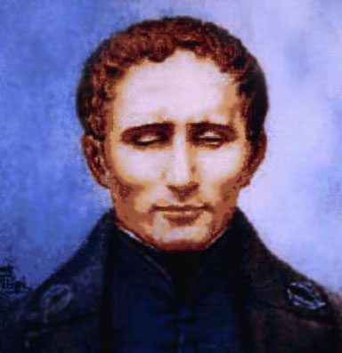

Braille font.
NOW WE FIND OUT
What is Braille?
January 4 is celebrated as World Braille Day. On this day, events are held, the purpose of which is draw attention to the needs and rights of blind and partially sighted people.
The Braille alphabet is a set of symbols that a person who has lost the ability to see feels tactile - with help touched Letter and number symbols are depicted as six dots arranged in different order. It helps visually impaired people read books, transmit musical and mathematical symbols.
Louis Braille
The font was developed in 1824 by the Frenchman Louis Braille. He was not a doctor or a scientist, but he directly encountered the problem of blindness. Brail was the son of a shoemaker and at the age of three he injured himself with a saddle knife in his father's workshop. IN the child developed inflammation - and he lost an eye. The infection managed to pass to the intact eye, and up to five years Braille is completely blind. At the age of 15, Louis created a dot-relief font that would make it possible to perceive information through the touch of hands.
He used six slits (dots) on a sheet arranged in two columns. Such a text was written from the reverse side of the sheet, and when it was turned over, one could feel the convexity of the dots. Accordingly, the text he wrote from right to left.
How to read Braille?
The Braille alphabet itself: three dots down and two across, the configurations of which determine letters, as well as numbers and musical notes. Writing in this font takes place from right to left, then the letter is turned over, and reading is already carried out from left to right. Each sign in this case falls under the pad of the person's finger the correct position of the hands allows you to read and write quite quickly.
For writing according to the Braille system, a device is used, which consists of a plate and a cover. Dots are embossed on the plate, and the lid contains holes through which writing is carried out. A metal pencil resembling an awl is used to apply dots. Writing paper for the blind is slightly different from ordinary paper, it is denser.
It is better to start learning with a person who uses it himself and knows how to teach others. With a good feeling, you can read 150 words per minute.
With the beginning of widespread computerization, alternatives to printed books appeared - for example, audio books, speech synthesizers and interactive books in the DAISY format - also audio, but with the possibility of searching in the text. However, pedagogues and activists agree: nothing can completely replace a printed book. A child who cannot read braille will not be able to learn to write it, and even adults lose the skill without practice. In addition, for deafblind people, dot writing is the only source of information and communication with the surrounding world.
Additional block for one more font
There is only text here. Hello mentors, sorry for the mess.There is only text here. Hello mentors, sorry for the mess.There is only text here. Hello mentors, sorry for the mess.There is only text here. Hello mentors, sorry for the mess.There is only text here. Hello mentors, sorry for the mess.There is only text here. Hello mentors, sorry for the mess.There is only text here. Hello mentors, sorry for the mess.There is only text here. Hello mentors, sorry for the mess.There is only text here. Hello mentors, sorry for the mess.There is only text here. Hello mentors, sorry for the mess.There is only text here. Hello mentors, sorry for the mess.There is only text here. Hello mentors, sorry for the mess.There is only text here. Hello mentors, sorry for the mess.There is only text here. Hello mentors, sorry for the mess.There is only text here. Hello mentors, sorry for the mess.There is only text here. Hello mentors, sorry for the mess.